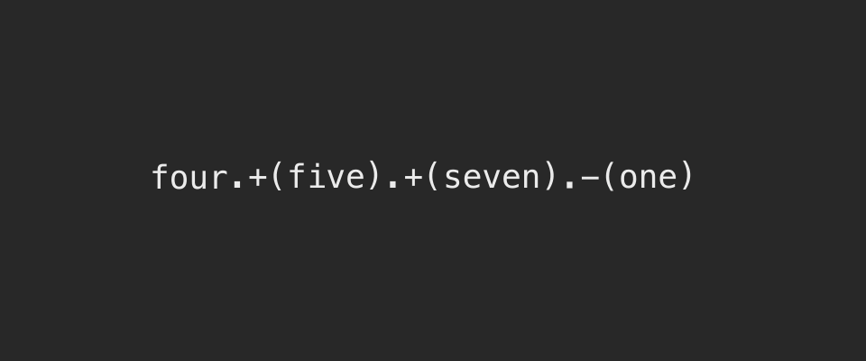

Messages and Interfaces
Our REPL provides us with a window through which we can interact with the program world. But how does that interaction happen? And what kinds of interaction are allowed?
Messages
We interact with the program world by sending it messages. In response to our messages, objects return something (the 'return value'). When we're using the REPL, the program world treats us, the programmer, as if we were just another object in the object world.
Here's a visual depiction of us, the programmer, interacting with the REPL by requesting an object by name (one). Provided that we have defined this variable, the program world goes and fetches the object referenced by that name:
Now that we have the object referenced by one, we can send it messages directly. For instance, we can send it the '+' message, telling it to add another number to itself, and return the result:
Or, we can send the object referenced by one other messages, like integer?, to tell us about itself:
Note the difference between those two messages we just sent to the object referenced by 1:
1 + 2
1.integer?
In both cases, we're sending a message to an object – but in the first case, we've got a space before the message +, making the statement look like a regular sum. In the second case, we've got this crazy dot thing between the object and the message. What gives?
Dot syntax
What might surprise you is that the second way is, secretly, the only way to send messages to objects in Ruby. The . (dot) means 'send this object a message'. 1.integer? means "send the object referenced by 1 a message asking it to answer if it's an integer or not."
In the first case, 1 + 2, Ruby is actually translating this to 1.+(2). We say, and see, 'one plus two', and Ruby translates that to "send the object referenced by 1 a message to add itself to the object referenced by 2."
Arguments
Sometimes, a messaged object knows everything it needs to know to answer the message. For instance: 1.integer? is perfectly answerable by 1 all on its own: it doesn't need any other object to tell us whether it's an integer.
Other times, a messaged object needs to know something else to answer the message. We couldn't get away with just saying 1.+, for example: 1 would rightly ask "+ what? What am I mean to add with?". In that case, we can give the object a reference to another object required to fulfil the message. We call this second object an argument:
# 2 is the argument
1.+(2)
> # five is the argument
> four.+(five)
> => 9
Just like dot syntax is formally-correct, it's formally-correct to wrap an argument inside parentheses () (I've done that above). But, sometimes, that's optional:
# 2 is the argument
1 + 2
Here's another example of optional parentheses:
> # five is the argument
> four + five
=> 9
So why does Ruby permit us to use this non-dot-syntaxy way of sending messages? In short, convenience. Ruby was designed to read as similarly to English as possible. These sorts of 'edge cases' – where Ruby syntax differs from normal – are rare. They're referred to as 'syntactic sugar' – because they are, quite literally, sweeteners on top of the rules of the language.
- Convert your numeral calculator to use dot syntax with parentheses.
We'll be using dot syntax with parentheses for now, so we can get used to writing formally-correct code.
What happens when we send an object a message?
For every message that can be received by an object, that object has some sort of procedure defined on it. A procedure is a set of instructions that is executed by the object, one after the other.
We'll go into much more detail about how to write these procedures later.
Like many program objects, these procedures usually have names. A named procedure is called a method. Sending an object a message to execute a procedure is referred to as calling a method:
An interface is a list of all the things an object can do: all the object's procedures. In other words, an interface is a list of object methods.
Making random numbers
If we don't specify an object to send a message to, by default it'll be sent to main, the main program object:
+(3)
The main program object can respond to a few messages by executing some useful procedures. In other words, the main object has some useful methods. You've already met one: puts. Another useful one is rand:
rand
Each time you run rand, you'll get a random float between zero and one. If you give rand an integer argument:
integer = 6
rand(integer)
You'll get a random number between zero and integer - 1 (so here, 0 to 5).
- Write a program that rolls a six-sided die and returns the result. This program should be runnable from the command line.
Asking objects to return other objects: integers and floats
Introducting floats
Something pretty weird happens when we do division with our numeral calculator:
> nine./(two)
=> 4
What's going on here?
The problem is that integer objects don't understand decimal points, so they round them down: 9/2 is 4.5, which the integer referenced by nine rounds down to 4.
To use decimal points, we need to use a different kind of number: a float (short for 'floating point number' – that is, the decimal point can float anywhere along the line of numbers).
Here are some example floats:
1.6
28.004
-0.41
Floats have a very specific purpose in programs: to do very fine calculations usually involving division, and as such they're rarely-used (as Chris Pine points out, who wants to look at 7.4 emails, or browse 1.8 webpages, or listen to 5.24 of their favorite songs?). But we need floats now!
Asking integers to return floats
When we send an integer object the message to_f, the integer object says "OK! You're looking for a float object with the same value as me", and returns that corresponding float object:
4.to_f
We can now divide this returned float object by another integer (or another float):
4.to_f./(5)
Of course, this is going to get pretty ugly for our poor numeral calculator. We don't want to be jamming to_f on the first numeral every time we want to do division; it makes the code super-hard to read:
> four.to_f./(five)
=> 0.8
- Figure out how to rewrite your numeral calculator to achieve the following functionality (without dot syntax):
> four / five
=> 0.8
Interfaces
What determines the possible messages that can be sent to a particular object? If we wanted to, could we try:
> 1.any_message_i_want
=> ???
Of course not. Objects have a limited number of possible messages they can be sent. In the case above, we'd get a useful error message telling us this:
1.any_message_i_want
In fact, the very set of messages to which an object can respond mostly determines what an object is in Ruby. For instance, if an object responded to a set of messages like this:
> object.bark
=> "woof!"
> object.wag_tail
=> "wag wag wag"
> object.dream_about_chasing_things
=> "*twitches*"
Then you could pretty reasonably figure out what that object is (a dog, if you were guessing).
Likewise, if an object responded to messages like this without throwing errors:
> object.walk
=> "waddle waddle"
> object.quack
=> "waak waak"
You could guess that the object is a duck. This principle is known as duck typing. That is: if it walks like a duck, and it quacks like a duck, it's a duck. Ruby cares less about what objects are, in and of themselves, and more about what sorts of messages they respond to.
Here's a more realistic example from a real-life program:
> object.calculate_average
=> 17.4
Again, we can guess that object is probably some kind of 'calculator'.
The set of messages that can be sent to an object is called its interface (from inter (between) and face (form) – so literally the shape of the space 'between objects'). Messages that can't be sent to an object simply won't have any way 'into' the object, which will throw an error:
Investigating object interfaces
How do we find out what an object's interface is (i.e. what messages they can respond to, or what methods they have)? Two ways:
- All Ruby objects have a method called
methodsdefined on their interface. If you call themethodsmethod, you get a list of every method defined on that object's interface. - Object interfaces are detailed in documentation, along with examples of how to use those interfaces. For instance, here's the documentation for integers.
If you're using the docs, right now we're using the word interface interchangeably with public instance methods.
- Find out every method defined on the interface of the object referenced by
1.
Many beginner programmers feel like they have to memorise every method on an object's interface. That's not true. While there are core methods you should learn – like
+,-, and so on – it's far more useful to get good at looking methods up. One benefit to Ruby methods is they're well-named: they usually do just what they say on the tin. As a result, you can usually have a guess at the method you need before needing to look it up.
Chaining messages
It's perfectly OK to send lots of messages to objects, one after the other:
> four.+(five).+(seven).-(one)
=> 15
As the computer goes through the line, each object.message statement is replaced by the value returned from sending that message to that object:

This 'queueing up of messages' is referred to as chaining.
four: We say "hey program, go get us the object referenced by the namefour".- The program says "OK, here's
4". .+(five): We say "hey4, add the value of the object referenced by the namefiveto your value".4says "OK, here's9"..+(seven): We say "hey9, add the value of the object referenced by the namesevento your value".9says "OK, here's16"..-(one): We say "hey16, add the value of the object referenced by the nameoneto your value".16says: "OK, here's15".- The program says "I'm done with this line! Here's what it evaluated to:
15".
The principle that "
object.messagegets replaced by the return value, which can be a newobjectfor a newmessage" is called referential transparency.
Complete the mastery quiz for chapter 3
Use your mastery quizzes repository to complete the quiz for chapter 3.